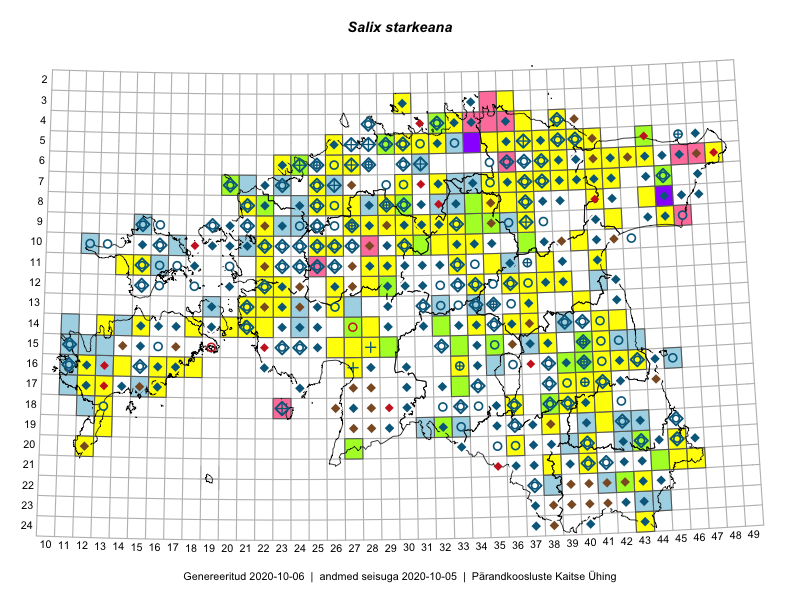

Salix starkeana
Uuendatud: 2016-12-01
Kaardile koondatud taksonid: Salix starkeana Willd.

Kaart põhineb 146 kirjel, neist vaatlusi 145 ja eksemplare 1.
Kuvatud viited 20 esimesele andmebaasikirjele, ülejäänud PlutoFis
- Tiit Hallikma, Toomas Kukk, Indrek Tammekänd: 2015-06-09: 12-28: ala
- Malle Leht: 2015-07-09: : ala
- Malle Leht: 2015-08-02: : ala
- Toomas Kukk, Eerik Leibak: 2015-08-09: 14-15: ala
- Toomas Kukk, Thea Kull, Timo Luhamäe, Ott Luuk, Peedu Saar: 2015-06-28: 13-26: ala
- Toomas Kukk, Peedu Saar: 2014-09-25: 07-42: ala
- Tiit Hallikma, Indrek Tammekänd, Toomas Kukk: 2015-06-09: 12-29: ala
- Rein Kalamees, Kersti Püssa: 2015-08-09: 05-31: ala
- Ott Luuk, Peedu Saar: 2015-09-03: 03-30: ala
- Ott Luuk, Toivo Sepp: 2015-07-29: 09-31: ala
- Peedu Saar, Ott Luuk: 2015-06-21: 14-41: ala
- Peedu Saar, Ott Luuk: 2015-06-21: 14-42: ala
- Ott Luuk, Peedu Saar: 2015-07-27: 11-35: ala
- Peedu Saar: 2015-07-14: 15-38: ala
- Ott Luuk, Peedu Saar: 2015-08-13: 24-43: ala
- Peedu Saar, Eerik Leibak: 2015-07-30: 16-41: ala
- Ott Luuk: 2015-06-28: 13-26: ala
- Peedu Saar, Liina Oja: 2015-06-08: 10-33: ala
- Peedu Saar, Liina Oja: 2015-07-20: 08-44: ala
- Peedu Saar, Liina Oja: 2015-07-21: 06-44: ala